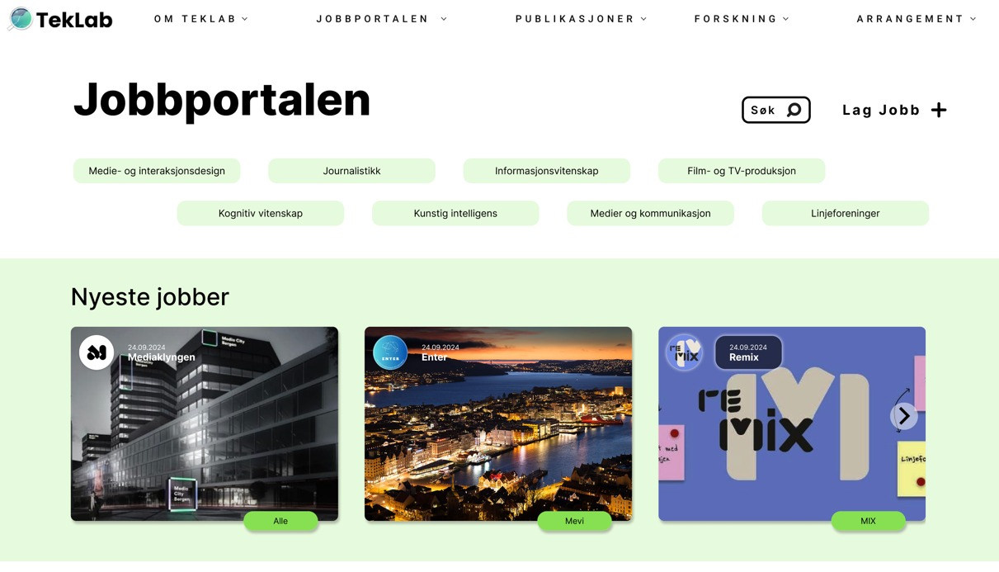
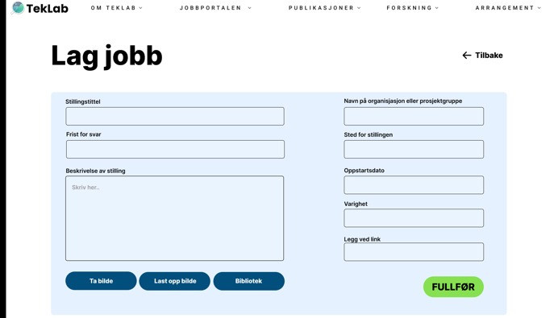

Jobbportalen.
Mange studenter trenger relevant arbeidserfaring for å få jobb etter studiene, men den erfaringen kan være vanskelig å skaffe seg underveis. I samarbeid med TekLab utviklet vi derfor Jobbportalen, en Figma-prototype som kobler studenter med småjobber fra blant annet oppstartsbedrifter og studentorganisasjoner. Studenter kan finne oppdrag innen sitt fagfelt, mens oppdragsgivere kan legge ut jobber. Løsningen ble utviklet med brukerintervjuer, prototyping og brukertesting, og ble kåret til beste prosjekt i MIX100.
MIX100 · Universitetet i Bergen2024

